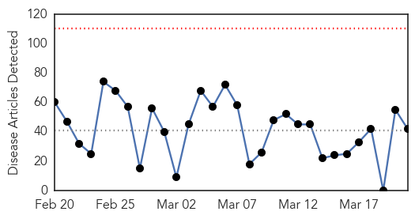

30 Day Trends
Web: 0 alerts, 0 warnings
Twitter: 0 alerts, 0 warnings
Top Articles:
- 0.982
- Parents warned that number of cases of scarlet fever at a 24 year high
- 0.982
- Is closure of hostels correct way to tackle jaundice?
- 0.971
- CDC confirms death from meningococcal disease at Drexel University
- 0.945
- Classical Swine Fever Under Control in Colombia
- 0.941
- TB Latest: Produce World of Chatteris says TB outbreak NOT at one of their factories and has “robust” policies to deal with illness
- 0.931
- Different flu strain hitting RI residents
- 0.917
- Chicago Tribune
- 0.917
- Chicago Tribune
- 0.917
- Chicago Tribune
- 0.917
- Chicago Tribune
- 0.917
- Chicago Tribune
- 0.917
- Chicago Tribune
- 0.917
- Chicago Tribune
- 0.910
- The world windows to Thailand
- 0.866
- North Korea fires 30 short-range rockets -Yonhap
- 0.866
- Chad fines CNPC unit $1.2 bln for environmental damage
- 0.866
- Western sanctions could raise Russia's borrowing costs
- 0.866
- Three dead, eight injured in fire at Jersey Shore motel
- 0.866
- Russia will respond in kind to U.S. sanctions
- 0.866
- Russian anti-narcotics body says U.S. sanctions will halt cooperation
- 0.866
- Putin promises to protect, patronise bank hit by U.S. sanctions
- 0.866
- Russia's Medvedev says Ukraine owes Russia $16 bln
- 0.866
- Timchenko's Stroitransgaz to build South Stream pipe in Bulgaria-sources
- 0.866
- Russia's Novatek shares fall 12 pct over U.S. sanctions
- 0.866
- Russia says sanctions unlawful, will create barriers
- 0.866
- Malaysia says no confirmation yet of suspected jet debris
- 0.866
- A police helicopter drops water on a forest fire on Runstboden mountain in the western Austrian village of Absam
- 0.837
- Drug-resistant TB a "global health security risk," WHO says
- 0.821
- DOH doctor says “no pink eye here” in the meantime Samoa issues health alert
- 0.753
- Equatorial Guinea reports polio case, first since 1999
- 0.727
- Water crisis hits Parirenyatwa Hospital
- 0.723
- Deadly pig virus numbers rise in US hog herd
- 0.717
- Contagious virus infecting Minnesota horses
- 0.680
- Not just the gut: negative relationships, fatigue are more powerful than symptoms in IBS patients' health perceptions
- 0.657
- NGO Tackles Leading Cause of Blindness, Trachoma
- 0.637
- RN talks nursing and numbers
- 0.618
- RI residents warned about differing flu strain
- 0.600
- Investigators Still Baffled By Polio-Like Illness In California Children
- 0.584
- 26m Bangladeshis deprived of ‘improved’ water
- 0.545
- The Untold Story of the Ghanaian TB Patient
- 0.520
- World´s poorest have least access to safe water: UNICEF CCTV News
- 0.509
- Reaching Migrants is Key to Success in the Global Fight against TB: IOM - World
Top Tweets:
- 0.570
- tengo changueria de la nada ando con escalofri√≥s, el cuerpo cortado, y dolor de cordales üò≠üò∑üò¥
Web/News Articles
Tweets